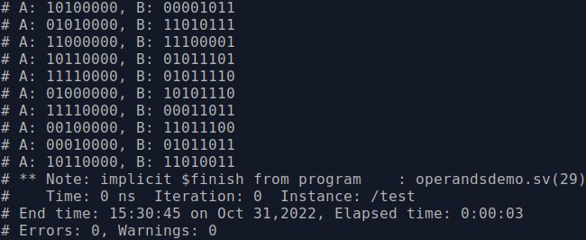

Time for another Buzz-word lightning round: SystemVerilog supports Constrained Random Verification. If you simply breakdown the words, it becomes quite clear already. Verification should be clear. Random, after the previous section, should also ring a bell. Then there is the third word: Constrained.
Generating random numbers to apply as stimuli is useful. It helps the verification engineer to touch on corner cases that might be missed while trying come up with all test vectors himself/herself. Hooray for randomness.
To be more in control of which random numbers are generated, it is useful to be able to lay constraints on the random number generator. These constraints can be altered during the tests or between different test scenarios.
class OperandsDemo;
rand byte A;
rand byte B;
constraint c1 {
A[3:0] == 4'b0;
}
function string ToString();
return $sformatf("A: %08b, B: %08b", this.A, this.B);
endfunction : ToString
endclass : OperandsDemo;
program test;
static OperandsDemo demo;
initial
begin
for(int i=0;i<10;i++)
begin
demo = new();
void'(demo.randomize());
$display("%s", demo.ToString());
end
end
endprogram : test
In this example, the class OperandsDemo shows how to put a constraint on operand A. A few remarks:
When an object is being randomised, the constraints are checked. If the constraints hold, the simulator continues. If the constraints are violated, new values are generated until the constraints are met.
To be complete, there are a number of other requirements:
It is fairly clear what the constraint in the example will accomplish. The 4 least significant bits of A should be zero. The result of the example is shown below.
$ vsim -c
$ vlog -sv OperandsDemo.sv
$ vsim -voptargs="+acc" test
$ run 10 us
Another intuitive example is given.
...
constraint c1 {
A[3:0] == 4'b0;
}
constraint c2 {
B > A;
}
...
# A: 00100000, B: 01011111
# A: 10110000, B: 01011000
# A: 10010000, B: 10100001
# A: 01000000, B: 01110011
# A: 10010000, B: 11101010
# A: 10010000, B: 00000100
# A: 11010000, B: 00000110
# A: 10010000, B: 10101101
# A: 00100000, B: 00110111
# A: 00010000, B: 00101000A few more general remarks on constraints:
class SomethingFancy;
rand integer value;
constraint c1;
endclass : SomethingFancy
constraint SomethingFancy::c1 {
value < 1000;
}
class SomethingFancy;
rand integer value;
constraint c1;
endclass : SomethingFancy
class SomethingFancier extends SomethingFancy;
constraint c1 {value > 0;}
endclass : SomethingFancier
function byte increment( byte x )
return x+1;
endfunction : increment
class OperandsDemo;
rand byte A;
rand byte B;
constraint c1 {
B == increment(A)
}
constraint c2 {
A[3:0] == 4'b0;
}
endclass : OperandsDemo
With these two examples c1 and c2 not many issues could arise. However, when the complete testbench becomes much larger and more complex, generating random values that fulfil the constraints can become processor intensive. SystemVerilog allows the verification engineer to help, by determining the order in which the constraints should be tackled.
constraint c1 {
A[3:0] == 4'b0;
}
constraint c2 {
unsigned'(B) > unsigned'(A);
}
constraint c3 {
solve A before B;
}
Similar to enabling and disabling randomisation, constraints can be enabled and disabled as well. This is done through demo.c2.constraint_mode(0) or demo.c1.constraint_mode(1) to respectively disable c2 or enable c1;